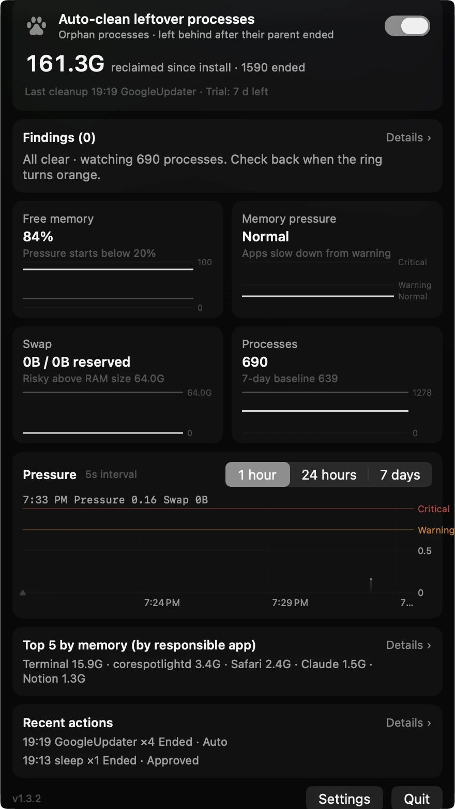
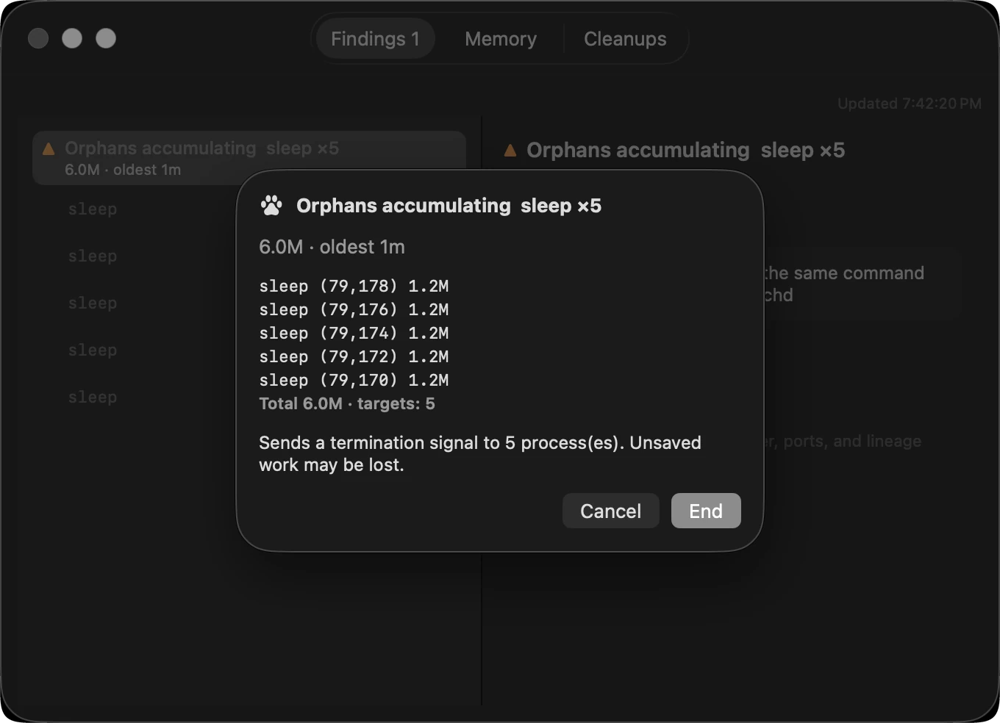
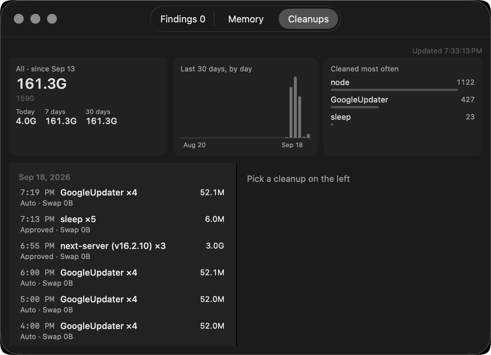

This is what it looks like
Every shot below was taken on the Mac this was written on, or printed straight from the code the app draws its icon with. Nothing redrawn, no numbers dressed up.
One thing in the menu bar
Day to day, one paw is all you see. Turn on the readout in settings if you want numbers.
The ring around it carries the memory state.
Quiet normally, coloured when it matters.
 Readout off (default)
Readout off (default)

Readout on Normal
Normal Warning
Warning Critical
Critical Paused
Paused Cleaning
CleaningWhen you click it
The whole state fits on one panel, nothing to scroll — reclaimed so far, what it found, free memory and swap, process count, the pressure graph, the last action, and settings and quit at the bottom.
This Mac has taken back 161.3 GB since install,
across 1,590 processes.

Before anything ends
Press clean up and the record window opens, lists exactly what is about to end, and asks again. Only what you pick ends.
“Unsaved work may be lost.”
It says that before it ends anything.

What, when and why
Everything ended stays on the record — by date, how many of what, and how much came back. Kept for a year.
Cleaned up most — 1,122 node,
427 GoogleUpdater.

Captured 18 September 2026 with Paws 1.3.2 on macOS 26, a Mac Studio (M4 Max, 64 GB). The numbers are that machine’s real values. The six menu-bar icons were printed straight from the code that draws them (PawGauge, MenuBarLabel) — a screenshot picks up the wallpaper through them and goes muddy.